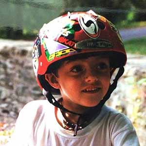
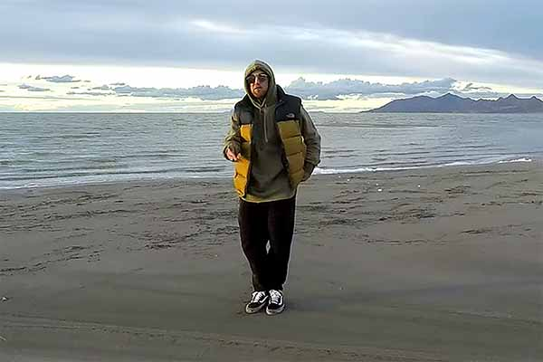
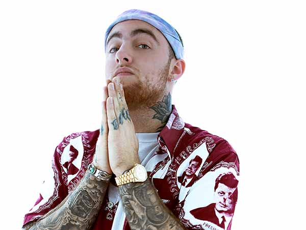
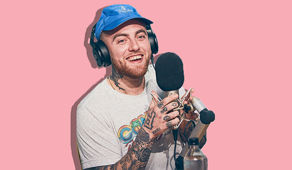

Malcolm James McCormick (January 19, 1992 – September 7, 2018), known professionally as Mac Miller, was an American rapper, singer, songwriter, and record producer from Pittsburgh, Pennsylvania.
Miller began his career in Pittsburgh's hip hop scene in 2007, at the age of fifteen. In 2010, he signed a record deal with Pittsburgh-based independent label Rostrum Records, with whom he had his breakthrough with the mixtapes K.I.D.S. (2010) and Best Day Ever (2011). Miller's debut studio album, Blue Slide Park (2011), became the first independently distributed debut album to top the US Billboard 200 since 1995. In 2013, he founded the record label imprint REMember Music. After his second studio album, Watching Movies with the Sound Off (2013), he left Rostrum and signed with the major label Warner Bros. Records in 2014. With them, he released four studio albums: GO:OD AM (2015), The Divine Feminine (2016), Swimming (2018), and the posthumous Circles (2020). For Swimming, he was posthumously nominated for a Grammy Award for Best Rap Album. He also served as a record producer for various artists, including himself, under the pseudonym Larry Fisherman.
Miller struggled with substance abuse, which was often referenced in his lyrics.[1] He died from an accidental drug overdose at his home on September 7, 2018, at the age of 26.
Contents
- Life and career
- 1992–2010: Early life and career beginnings
- 2010–2013: Breakthrough, Blue Slide Park and Watching Movies with the Sound Off
- 2014–2018: GO:OD AM, The Divine Feminine, and Swimming
- Posthumous releases
- Artistry
- Musical style and progression
- Influences
- Personal life
- Legal issues
- Death
- Discography
- Filmography
- References
- External links
Life and career
1992-2010: Early life and beginnings
Malcolm James McCormick was born on January 19, 1992,[2] in the Point Breeze neighborhood of Pittsburgh.[3] He was the son of Karen Meyers, a photographer, and Mark McCormick, an architect,[4] and had an older brother, Miller.[5] His mother is Jewish, and his father is Christian.[6] While he and his brother were raised Jewish,[3][7] he attended a Catholic grade school to "ensure a good education and a chance to play football and lacrosse."[3] He later went to Winchester Thurston School,[8] and graduated from Taylor Allderdice High School.[9]
A self-taught musician, Miller played piano, guitar, drums, and bass by the age of six.[9][10] He first started rapping at the age of fourteen.[11] Before that, he wanted to be a singer.[12] In high school, he decided to focus on his rap career, later noting, "Once I hit 15, I got real serious about it and it changed my life completely ... I used to be into sports, play all the sports, go to all the high school parties. But once I found out hip-hop is almost like a job, that's all I did."[10] He originally went by the name Easy Mac (often stylized as EZ Mac) and released the mixtape But My Mackin' Ain't Easy in 2007 at the age of fifteen.[2] By 2009, he established himself as Mac Miller, and released two mixtapes: The Jukebox: Prelude to Class Clown and The High Life.[2] At the 2010 Pittsburgh Hip Hop Awards, Miller won 21 & Under of the Year, and Best Hip Hop Video for "Live Free".[13]
2010–2013: Breakthrough, Blue Slide Park and Watching Movies with the Sound Off
Miller signed with the independent label Rostrum Records in July 2010, in the lead-up to his mixtape K.I.D.S.[14] Rostrum president Benjy Grinberg met Miller while recording with Wiz Khalifa at ID Labs.[15] Although Grinberg started giving Miller advice, he did not show interest in getting involved with his career until Miller began work on K.I.D.S., when he "noticed a maturation in his sound and approach to his music."[15] By that point, Miller had started attracting interest from other record companies, but chose Rostrum due to its location in his hometown and association with Wiz Khalifa.[15] K.I.D.S. was released by Rostrum in August 2010.[10] During this time, Miller broke through with a focus on social media engagement, digital sales, and persistent touring, due to a lack of radio airplay or mainstream features.[16]
XXL featured Miller in its annual "Freshman Class" list of 2011, alongside ten other rappers including Kendrick Lamar and Meek Mill.[17][18] Miller released his fifth mixtape, Best Day Ever, in March 2011.[19] Its single "Donald Trump" became his first song to chart on the US Billboard Hot 100,[20] peaking at number 75,[21] and received a platinum certification from the Recording Industry Association of America (RIAA).[22] Also in March 2011, he released a six-track EP, On and On and Beyond. Intended to target a new audience, four of its tracks were previously included on his mixtapes.[23] The EP was his first entry into the US Billboard 200 albums chart at number 55.[24]
Miller's debut studio album, Blue Slide Park, released on November 8, 2011.[25] With 144,000 first week sales, it debuted atop the Billboard 200, the first independently distributed debut album to do so since Tha Dogg Pound's Dogg Food in 1995.[26] Three songs from the album, "Smile Back", "Frick Park Market", and "Party on Fifth Ave." charted on the Billboard Hot 100, peaking at number 55, 60, and 64, respectively.[21] Blue Slide Park was certified gold in the United States and Canada.[27][28] Despite its impressive commercial performance, Blue Slide Park received a generally mixed critical response.
On March 23, 2012, Miller released his seventh mixtape, Macadelic.[29] The single "Loud" peaked at number 53 on the Billboard Hot 100.[21] In mid-2012, Miller premiered two songs produced by Pharrell Williams, from a planned collaboration EP, Pink Slime.[30] At least ten tracks were completed by August 2012 according to Miller,[30] but the project was not released despite a multi-year effort.[31][32] Miller released an EP, You, under the alias Larry Lovestein & The Velvet Revival on November 21, 2012. Rather than rap, the EP features Miller crooning over lounging jazz instrumentals.[33]
In early 2013, Miller founded the record label imprint REMember Music, named after a deceased friend.[34] The label primarily focused on Pittsburgh artists, as well as releases for Miller's alter-egos.[35] Miller starred in a six-episode reality series, Mac Miller and the Most Dope Family, on MTV2. It followed the production of his upcoming second studio album, and premiered on February 26, 2013.[36] On March 4, 2013, Miller released a mixtape, Run-On Sentences Vol. 1, solely featuring instrumentals made by himself, under his production alias Larry Fisherman.[37] Later that month, Miller featured on singer Ariana Grande's lead single "The Way" for her debut album, Yours Truly;[38] the song is Miller's highest peak on the Billboard Hot 100 at number nine, and was certified triple platinum by the RIAA.[21][22]
His second studio album, Watching Movies with the Sound Off, was released on June 18, 2013. It received generally positive reviews, with most critics praising his new psychedelic sound. The album debuted at number three on the Billboard 200, selling 102,000 copies in its first week.[39] The album spawned three singles; "S.D.S.", "Watching Movies" and "Goosebumpz". The album featured guest appearances from Schoolboy Q, Ab-Soul, Earl Sweatshirt, Tyler, the Creator, Action Bronson and Jay Electronica.[40][41] According to Miller, the album is "very introspective and very personal so it's kind of throwing it all out there and seeing what happens."[42]
Pittsburgh mayor Luke Ravenstahl presented Miller with a key to the city on September 20, 2013, and declared the date "Mac Miller Day".[43][44] In collaboration with Vince Staples, Miller produced the mixtape Stolen Youth.[45] Under the moniker Delusional Thomas, Miller self-produced and released an eponymous mixtape, Delusional Thomas, on October 31, 2013.[46] On December 17, 2013, Miller released the live album Live from Space, containing nine songs performed with the band The Internet during his Space Migration Tour and five studio-recorded tracks that were cut from his second album.[47]
2014–2018: GO:OD AM, The Divine Feminine, and Swimming
Miller parted ways with Rostrum Records when his contract expired in January 2014.[48] On May 11, 2014, Miller independently released his tenth solo mixtape, Faces.[49] Colin Stutz of Billboard wrote that the 24-track mixtape "shows [Miller] introspective, ruminating over his drug use, fame and past."[49] Pitchfork's Craig Jenkins called Faces his "most consistently honest and personal work to date".[50] Miller later reflected on Faces, noting his drug-addled lifestyle while recording it.[51] The second season of Miller's reality series Mac Miller and the Most Dope Family aired on MTV2 in mid-2014.[52]
In October 2014, Miller signed a recording contract and distribution deal for REMember Music with the major label Warner Bros. Records. He chose Warner as it was "the most independent thinking" company he met with.[53] Miller's major label debut, GO:OD AM, was released on September 18, 2015.[54] It charted at number four on the Billboard 200, with 87,000 album-equivalent units.[55] The album and the single "Weekend", featuring singer Miguel, were certified gold and platinum by the RIAA, respectively.[22][56]
Miller began work on his next studio album immediately after completing GO:OD AM, wanting to explore the emotion of love.[57][58] His fourth studio album, The Divine Feminine, was released on September 16, 2016.[59] The album features Miller singing nearly as much as rapping, and incorporates genres such as R&B, jazz and funk.[58] It received positive reviews, with Pitchfork stating that the album was succinct and refined in its portrayal of love, consequently accentuating Miller's artistry.[60] The Divine Feminine debuted at number two on the Billboard 200 and number one on Billboard's Top R&B/Hip-Hop Albums chart with 48,000 units.[61][62]
Miller's fifth studio album, Swimming, was released on August 3, 2018, to positive reviews from critics.[63] Pitchfork described the album as consisting of "wistful soul and warm funk", through his exploration of heartbreak and his own mental health issues.[64] Swimming debuted at number three on the Billboard 200 with 66,000 units, his fifth consecutive top five-charting album release in the United States.[65] After his death in September 2018, the single "Self Care" rose to number 33 on the Billboard Hot 100, his highest peak as a lead artist at the time.[66] Swimming was nominated for Best Rap Album at the 61st Annual Grammy Awards.[67]
Posthumous releases
Miller's estate began approving posthumous music releases in June 2019, with the collaborative singles "Time" with Free Nationals and Kali Uchis, and "That's Life" with 88-Keys and Sia.[68] On January 8, 2020, Miller's family announced his first posthumous album, Circles, which was released later that month on January 17. Miller had been working on the album before his death, as a companion album to Swimming. Production was completed by Jon Brion, who worked with Miller on both albums.[69] Circles debuted at number three on the Billboard 200 with 164,000 units, his biggest week for an album.[70] Its single, "Good News", became his highest charting song as lead artist, peaking at number 17 on the Billboard Hot 100.[21]
Artistry
Musical style and progression
Early in his career, Miller's music was widely regarded as "frat rap", with lyrics focusing on partying, smoking marijuana, and lusting after fame, money, and women.[71][72] After the mixed critical response of Blue Slide Park, Miller began to employ a more expressive and experimental approach to his subsequent releases.[72]
Influences
Miller included Big L, Lauryn Hill, Beastie Boys, Outkast, and A Tribe Called Quest among his influences.[73] He had a close relationship with fellow Pittsburgh rapper Wiz Khalifa, saying "Wiz has been a big brother to me with this music thing so far. Our relationship is beyond music. He really is just my homie, whether I will be making music or not."[6] He also has stated rapper Eminem as his influence saying, "I didn’t really understand the genius of Em until I was like 15, 16.” [74]
Personal life
Miller spoke openly about his struggle with substance abuse and depression.[1] To manage stress during his Macadelic Tour in 2012, Miller began taking promethazine, and later became addicted to lean. Miller told Complex in January 2013: "I love lean; it's great. I was not happy and I was on lean very heavy. I was so fucked up all the time it was bad. My friends couldn't even look at me the same. I was lost."[41] He quit taking promethazine in November 2012, before shooting his reality show Mac Miller and the Most Dope Family.[41] In 2014, Miller was taking drugs daily, and felt that the final track on Faces, "Grand Finale", was "supposed to be the last song [he] made on Earth." Recounting that period to Billboard in August 2015, Miller was "definitely way healthier" but not "completely" sober.[75] After stating he "hated" being sober in a February 2016 documentary,[1] Miller had become sober for three months by October 2016, noting his better mood and maintained creativity.[76] However, when asked about his sobriety in April 2017, Miller said he was now "living regularly".[77]
Miller was in an on-again, off-again relationship with writer Nomi Leasure, whom he met in middle school, for seven years until 2016.[75][78][79] Many of the songs on his mixtape Macadelic were about their relationship.[78] Miller dated singer Ariana Grande from August 2016 to May 2018.[80]
Legal issues
In February 2011, while on tour in upstate New York, Miller and his friends were arrested for possession of marijuana for which they spent the night in jail. Miller said the case was "settled".[81]
Producer Lord Finesse filed a $10 million lawsuit against Miller, Rostrum Records and DatPiff in July 2012, for the use of a sample of Finesse's song "Hip 2 Da Game" in Miller's 2010 mixtape song "Kool-Aid and Frozen Pizza".[82] In December 2012, the lawsuit was settled out of court with its stipulations kept confidential.[83]
In March 2015, the band Aquarian Dream filed a $150,000 lawsuit against Miller for sampling their song "Yesterday (Was so Nice Today)" in the song "Therapy" that appeared on Miller's 2014 mixtape “Faces”.[84]
Miller was arrested in May 2018 on charges of driving under the influence and hit and run after crashing into a utility pole and fleeing the scene with two passengers. Police obtained his address from his license plate number and Miller confessed when police arrived at his home. He was taken into custody and released on $15,000 bail.[85] In August 2018, Miller was charged with two counts of driving under the influence for the incident.[86] Miller died before his arraignment and the charges were dropped.[87]
Death

On September 7, 2018, Miller was found unresponsive in his Studio City home by his personal assistant, who called 911 and performed CPR until paramedics arrived. Miller was pronounced dead at the scene at 11:51 a.m. (PDT).[88][89] He had been scheduled for a video shoot on the day of his death, and was to embark on his Swimming Tour in October.[90][91] In his will, Miller named his mother, father, and brother as beneficiaries.[92] He was buried at Homewood Cemetery in his hometown of Pittsburgh, in a Jewish funeral.[93] On November 5, 2018, the Los Angeles County Coroner's office determined that Miller died from an accidental drug overdose due to a "mixed drug toxicity" of fentanyl, cocaine, and alcohol.[94]
Thousands of fans held a vigil for Miller on September 11, 2018, at Pittsburgh's Blue Slide Park, the inspiration behind his debut album title;[95] the site continues to be a place of remembrance.[96] A tribute concert, Mac Miller: A Celebration of Life, took place on October 31, 2018, in Los Angeles. Many of his friends and collaborators performed or provided messages at the concert; proceeds raised benefited the newly-established Mac Miller Circles Fund, which aims to support youth arts and community-building programs in his memory.[97] The charity had raised over $700,000 by January 2019.[98] In May 2019, the renamed Mac Miller Fund issued its first grants, including $50,000 to MusiCares, which was used to launch their Mac Miller Legacy Fund to help young musicians with substance abuse issues.[99][100]
Three men were arrested in September 2019 during an investigation into Miller's death. Cameron James Pettit allegedly sold Miller counterfeit oxycodone pills containing fentanyl two days before his death, which were run to Pettit by Ryan Reavis and supplied by Stephen Walter. Miller had asked Pettit for Percocet, a prescribed painkiller containing oxycodone, in addition to cocaine and Xanax. Investigators believe Miller snorted the laced pills before his death.[101][102][103] The three men were indicted on charges of conspiracy and distribution of drugs resulting in death.[104]
Discography
Main articles: Mac Miller discography and Mac Miller production discography
Studio albums
- Blue Slide Park (2011)
- Watching Movies with the Sound Off (2013)
- GO:OD AM (2015)
- The Divine Feminine (2016)
- Swimming (2018)
- Circles (2020)
- Circles
- Complicated
- Blue World
- Good News
- I Can See
- Everybody
- Woods
- Hand Me Downs (Ft. Baro Sura)
- That's On Me
- Hands
- Surf
- Once a Day
- Right
- Floating
Filmography
| Year | Title | Role |
|---|---|---|
| 2011 | Single Ladies | Himself |
| 2012 | Punk'd | Himself |
| 2013,2015 | Ridiculousness | Himself |
| 2013-2014 | Mac Miller and the Most Dope Family | Himself |
| 2013 | Scary Movie 5 | D'Andre |
| 2014 | Loiter Squad | Dave |
| 2015 | Hi, How Are You Daniel Johnston? | None: Ex. Producer |
| 2019 | Shangir-La | Himself |